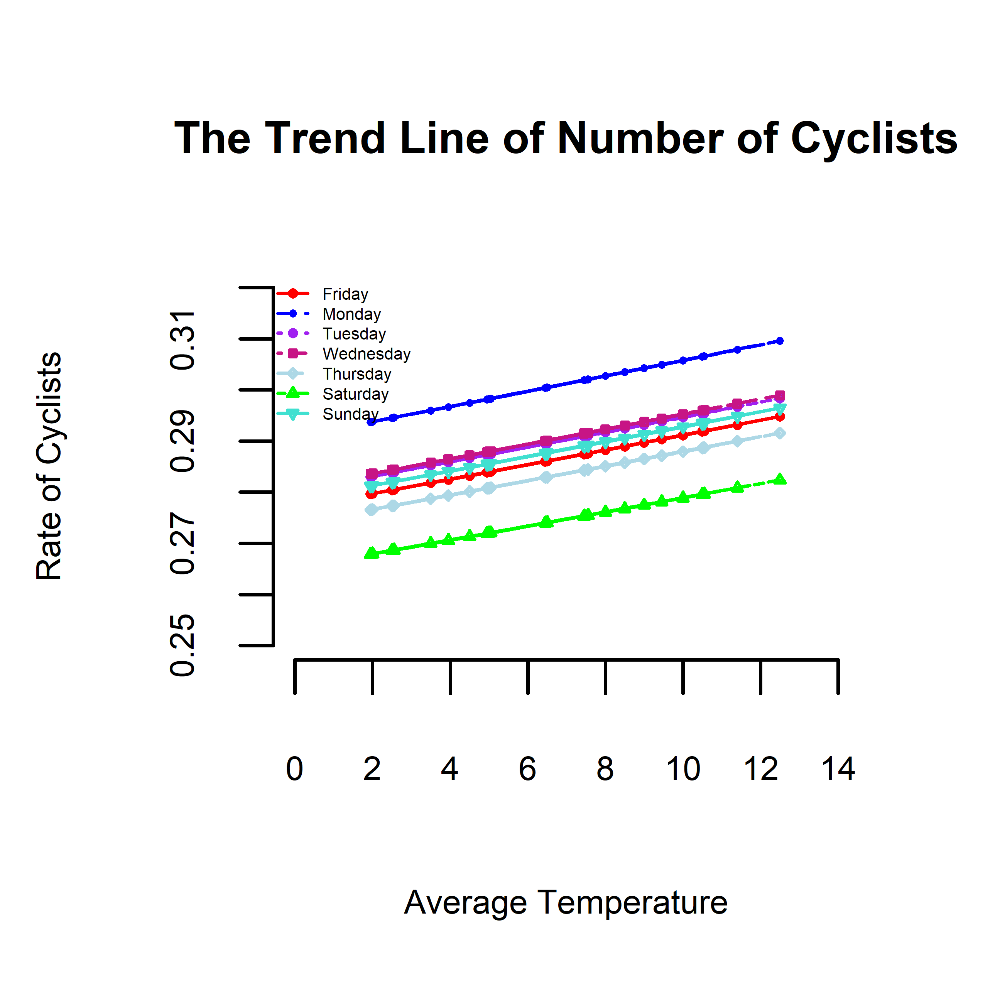

class: center, middle, inverse, title-slide .title[ # <font size = 7 color = "white">Rate of Cyclists Across Manhattan Bridge</font> ] .subtitle[ ##  ] .author[ ### <font size = 5 color = "white"> Gianna LaFrance </font> ] .institute[ ### <font size = 6 color = "white">West Chester University of Pennsylvania</font><br> ] .date[ ### <font color = "white" size =4> Prepared for<br> </font> <br> <font color = "gold" size = 6> Class Presentation </font> <br> <br> ] --- class:inverse4, top <h1 align="center"> Table of Contents</h1> <BR> .pull-left[ - Description of Data set - Daily total number of bikes crossing the Manhattan Bridge - Variables in the Data set - Date - Day (of the week) - HighTemp - LowTemp - Precipitation - ManhattanBridge (number of cyclists) - total ] .pull-right[ - Modeling - Poisson Regression Model - Quasi-Poisson Model - Dispersion Index - Select the Final Model - Visualizations - Rate of cyclists entering and exiting the bridge - Conclusion ] --- name: xaringanthemer <h1 align="center"> Poisson Model</h1> <br> .pull-left[ #### Poisson <li> A Poison Regression Model on the Counts of cyclists crossing the Manhattan Bridge using the predicitor variables day, HighTemp, LowTemp, and Precipitation. <li> All the variables were highly statistically significant. <li> When the day is a weekend and the temperature is low and the precipitation is high, the count of cyclists crossing the bridge decreases. <li> When the day is a weekday and the temperature is high, the count of cyclists crossing the bridge increases. ] .pull-right[ <table class="table" style="font-size: 17px; margin-left: auto; margin-right: auto;"> <caption style="font-size: initial !important;">The Poisson regression model</caption> <thead> <tr> <th style="text-align:left;"> </th> <th style="text-align:right;"> Estimate </th> <th style="text-align:right;"> Std. Error </th> <th style="text-align:right;"> z value </th> <th style="text-align:right;"> Pr(>|z|) </th> </tr> </thead> <tbody> <tr> <td style="text-align:left;"> (Intercept) </td> <td style="text-align:right;"> 7.4842771 </td> <td style="text-align:right;"> 0.0236149 </td> <td style="text-align:right;"> 316.930067 </td> <td style="text-align:right;"> 0.0000000 </td> </tr> <tr> <td style="text-align:left;"> DayMonday </td> <td style="text-align:right;"> 0.0985625 </td> <td style="text-align:right;"> 0.0104808 </td> <td style="text-align:right;"> 9.404096 </td> <td style="text-align:right;"> 0.0000000 </td> </tr> <tr> <td style="text-align:left;"> DaySaturday </td> <td style="text-align:right;"> -0.3552100 </td> <td style="text-align:right;"> 0.0110159 </td> <td style="text-align:right;"> -32.245078 </td> <td style="text-align:right;"> 0.0000000 </td> </tr> <tr> <td style="text-align:left;"> DaySunday </td> <td style="text-align:right;"> -0.2367027 </td> <td style="text-align:right;"> 0.0102777 </td> <td style="text-align:right;"> -23.030627 </td> <td style="text-align:right;"> 0.0000000 </td> </tr> <tr> <td style="text-align:left;"> DayThursday </td> <td style="text-align:right;"> 0.0016272 </td> <td style="text-align:right;"> 0.0110615 </td> <td style="text-align:right;"> 0.147108 </td> <td style="text-align:right;"> 0.8830468 </td> </tr> <tr> <td style="text-align:left;"> DayTuesday </td> <td style="text-align:right;"> 0.2002094 </td> <td style="text-align:right;"> 0.0109684 </td> <td style="text-align:right;"> 18.253325 </td> <td style="text-align:right;"> 0.0000000 </td> </tr> <tr> <td style="text-align:left;"> DayWednesday </td> <td style="text-align:right;"> 0.0392152 </td> <td style="text-align:right;"> 0.0107568 </td> <td style="text-align:right;"> 3.645636 </td> <td style="text-align:right;"> 0.0002667 </td> </tr> <tr> <td style="text-align:left;"> HighTemp </td> <td style="text-align:right;"> 0.0197124 </td> <td style="text-align:right;"> 0.0006288 </td> <td style="text-align:right;"> 31.348897 </td> <td style="text-align:right;"> 0.0000000 </td> </tr> <tr> <td style="text-align:left;"> LowTemp </td> <td style="text-align:right;"> -0.0046676 </td> <td style="text-align:right;"> 0.0008375 </td> <td style="text-align:right;"> -5.573330 </td> <td style="text-align:right;"> 0.0000000 </td> </tr> <tr> <td style="text-align:left;"> Precipitation </td> <td style="text-align:right;"> -1.1345660 </td> <td style="text-align:right;"> 0.0183601 </td> <td style="text-align:right;"> -61.795096 </td> <td style="text-align:right;"> 0.0000000 </td> </tr> </tbody> </table> ] --- name: xaringanthemer <h1 align="center"> Quasi-Poisson Model</h1> <br> .pull-left[ #### Quasi-Poisson <li> Three variables: Day, AvgTemp, and NewPrecip <li> Response variable: Count of Cyclists crossing the Manhattan Bridge <li> The dispersion index is 3.932 ] .pull-right[ <table class="table" style="font-size: 18px; margin-left: auto; margin-right: auto;"> <caption style="font-size: initial !important;">Quasi-Poisson regression</caption> <thead> <tr> <th style="text-align:left;"> </th> <th style="text-align:right;"> Estimate </th> <th style="text-align:right;"> Std. Error </th> <th style="text-align:right;"> t value </th> <th style="text-align:right;"> Pr(>|t|) </th> </tr> </thead> <tbody> <tr> <td style="text-align:left;"> (Intercept) </td> <td style="text-align:right;"> -1.2841788 </td> <td style="text-align:right;"> 0.0259352 </td> <td style="text-align:right;"> -49.5149736 </td> <td style="text-align:right;"> 0.0000000 </td> </tr> <tr> <td style="text-align:left;"> DayMonday </td> <td style="text-align:right;"> 0.0491628 </td> <td style="text-align:right;"> 0.0206233 </td> <td style="text-align:right;"> 2.3838525 </td> <td style="text-align:right;"> 0.0266478 </td> </tr> <tr> <td style="text-align:left;"> DaySaturday </td> <td style="text-align:right;"> -0.0431585 </td> <td style="text-align:right;"> 0.0220493 </td> <td style="text-align:right;"> -1.9573633 </td> <td style="text-align:right;"> 0.0637280 </td> </tr> <tr> <td style="text-align:left;"> DaySunday </td> <td style="text-align:right;"> 0.0055753 </td> <td style="text-align:right;"> 0.0210582 </td> <td style="text-align:right;"> 0.2647556 </td> <td style="text-align:right;"> 0.7937790 </td> </tr> <tr> <td style="text-align:left;"> DayThursday </td> <td style="text-align:right;"> -0.0106473 </td> <td style="text-align:right;"> 0.0224219 </td> <td style="text-align:right;"> -0.4748613 </td> <td style="text-align:right;"> 0.6397871 </td> </tr> <tr> <td style="text-align:left;"> DayTuesday </td> <td style="text-align:right;"> 0.0115586 </td> <td style="text-align:right;"> 0.0218350 </td> <td style="text-align:right;"> 0.5293604 </td> <td style="text-align:right;"> 0.6021072 </td> </tr> <tr> <td style="text-align:left;"> DayWednesday </td> <td style="text-align:right;"> 0.0136944 </td> <td style="text-align:right;"> 0.0220048 </td> <td style="text-align:right;"> 0.6223377 </td> <td style="text-align:right;"> 0.5404191 </td> </tr> <tr> <td style="text-align:left;"> AvgTemp </td> <td style="text-align:right;"> 0.0052373 </td> <td style="text-align:right;"> 0.0023506 </td> <td style="text-align:right;"> 2.2280570 </td> <td style="text-align:right;"> 0.0369391 </td> </tr> <tr> <td style="text-align:left;"> NewPrecip </td> <td style="text-align:right;"> 0.0040403 </td> <td style="text-align:right;"> 0.0150458 </td> <td style="text-align:right;"> 0.2685317 </td> <td style="text-align:right;"> 0.7909104 </td> </tr> </tbody> </table> ] --- class: inverse1 center middle ## Rate of Cyclists Entering and Exiting the Bridge <img src="NinjaSlideTherm_files/figure-html/visualization-1.png" width="750px" height="550px" style="display: block; margin: auto;" /> --- name: Conclusion class: middle <h1 align="center"> Conclusion</h1> <br> <middle> <li> According to the graph above and the model, the three days that have the highest rate of cyclists crossing the bridge are Monday, Tuesday, and Wednesday with Saturday having the lowest rate. <li> As the average temperature increases, so does the rate of cyclists. <li> The Quasi-Poisson Regression Model is used for prediction due to the high dispersion value. <li> When the day is a weekday and the temperature is high, the count of cyclists crossing the bridge increases. <li> Overall, the highest rate of people that are cycling over the Manhattan bridge is on Monday with the lowest rate being Saturday. </middle> --- class: center, middle # Thanks!